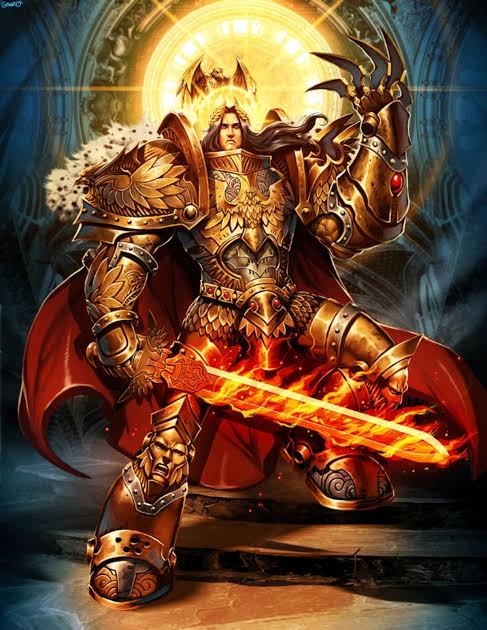

Imperium of Man Lore

| Legion | Primarch | Numbers | Successor Chapters |
|---|---|---|---|
| Blood Angels 9th Legion | Primarch: Sanguinius | ~1000 Space Marines | Absolvers, Angels of Encarmine, Blood Drinkers, Blood Ravens, Flesh Tearers, Red Knights, and Red Scorpions |
| Dark Angels 1st Legion | Primarch: Lion El'Jonson | ~1000 Space Marines | Angels of Absolution, Angels of Redemption, Angels of Vengeance, Angels of the Abyss and Angels of the Dark |
| Space Wolves 6th Legion | Primarch: Leman Russ | ~1000 Space Marines | Wolf Brothers, Wolfspears, Blood Wolves, Icefangs, Mooneaters |
| Ultramarines 13th Legion | Primarch: Roboute Guilliman | ~1000 Space Marines | Inceptors, Marines Errant, Mortifactors, Angels of Revenant, Ultramarines, Novamarines, Praetors of Orpheus |
| Imperial Fists 7th Legion | Primarch: Rogal Dorn | ~1000 Space Marines | Crimson Fists, Black Templars, Lamenters, Minotaurs, and the Howling Griffons |
Note: This Data is based on the lore of the Warhammer 40K universe and may not reflect the current state of the game or its factions.